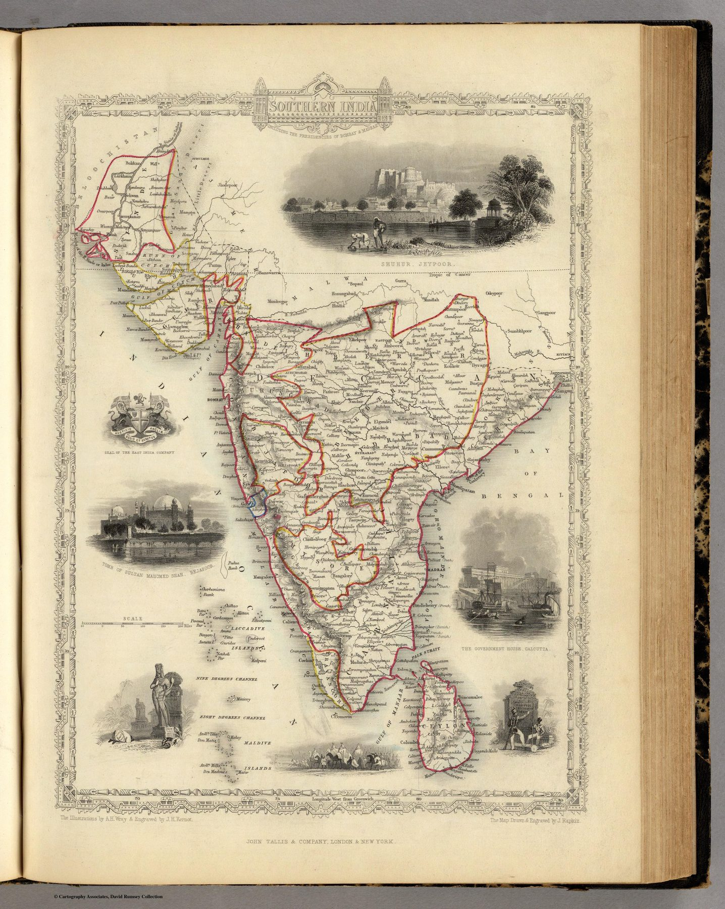

← Administered Empire and Victorian Atlas

The atlas object
Published in the Tallis Illustrated Atlas, the plate combines John Rapkin’s map with vignettes drawn by A. H. Wray and engraved by J. H. Kernot. The cartography is enclosed within the elaborate architectural and pictorial border characteristic of the series.
Presidencies and pictures
The title names British administrative units rather than older kingdoms or broad classical regions. Around that political map, views and emblems turn southern India into an illustrated possession for the atlas reader. The East India Company’s insignia makes the institutional frame explicit.
A popular imperial object
The plate translated administrative knowledge into a handsome commercial product: sufficiently informative to instruct, sufficiently ornamental to display. The viewer is invited to understand the presidencies and enjoy their visual difference at once.
The gaze
Wray’s vignettes and the Company’s arms frame the same map, and the pairing is the sheet’s argument. The presidencies are named in the title as the proper units of the south; the pictures around them supply the south’s look. A reader could take in both without noticing that one was a fact of administration and the other a choice of the engraver.
In the Deccan timeline